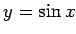

Inhalt Index DeskTop Bronstein

 Arithmetik Algebraische und transzendente Gleichungen Rückführung transzendenter Gleichungen auf algebraische
Arithmetik Algebraische und transzendente Gleichungen Rückführung transzendenter Gleichungen auf algebraische


Trigonometrische Gleichungen können auf algebraische Gleichungen zurückgeführt werden, wenn die Unbekannte x oder der Ausdruck nx+a mit ganzzahligem n nur im Argument der trigonometrischen Funktionen steht. Unter Verwendung der trigonometrischen Formeln wird die Gleichung so umgeformt, daß sie nur noch eine einzige Funktion von x enthält, die gleich y gesetzt wird. Nach der Lösung der so erhaltenen Gleichung wird x bestimmt. Zu beachten ist hierbei die Mehrdeutigkeit der Lösungen.
| Beispiel |
|
oder Substitution von  liefert |